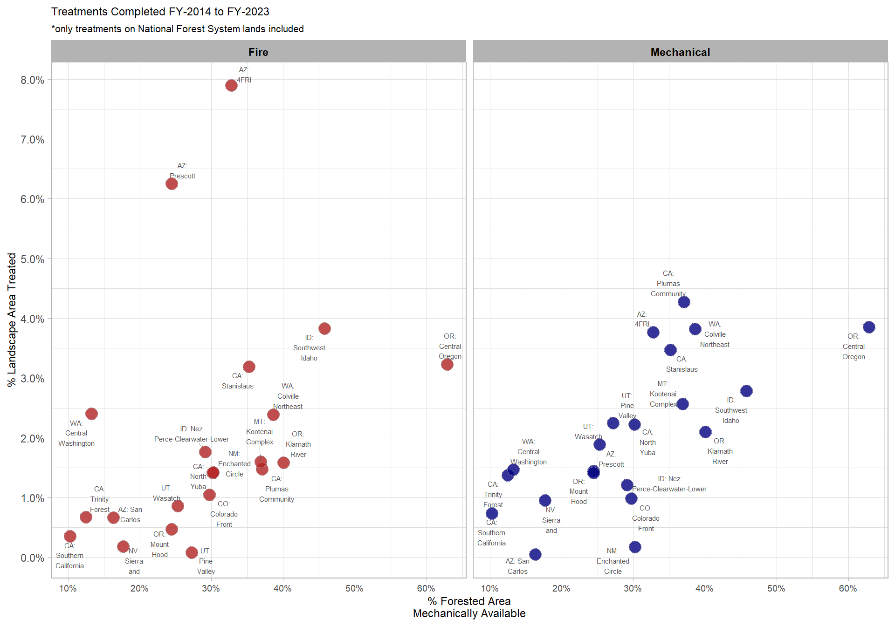
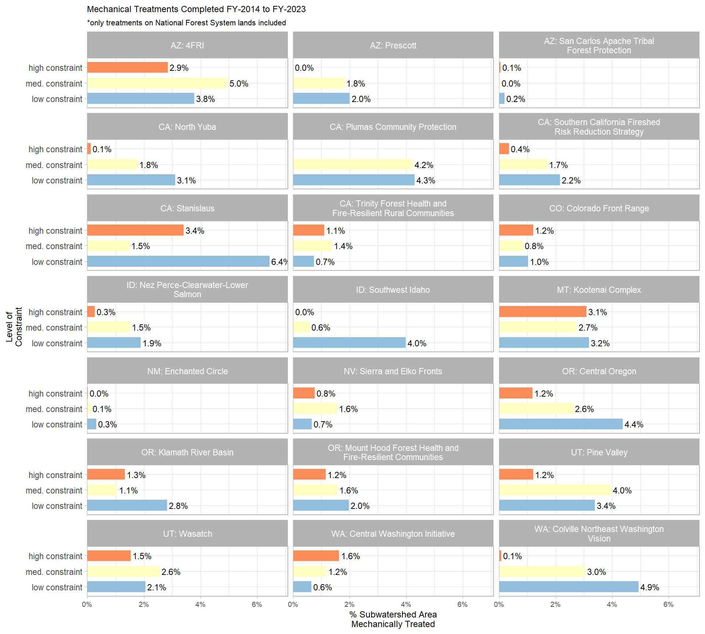
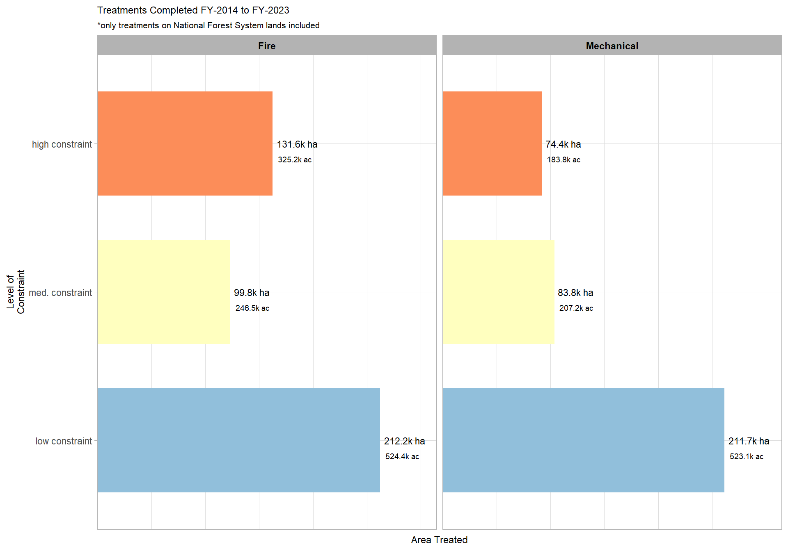
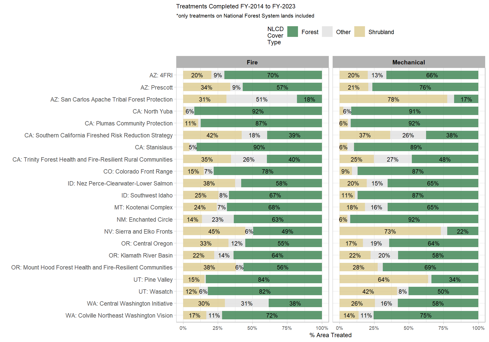

Section 7 Constrained Area vs. Treated Area
# turn off the s2 processing
## https://stackoverflow.com/questions/68478179/how-to-resolve-spherical-geometry-failures-when-joining-spatial-data
sf::sf_use_s2(FALSE)7.1 Read in Constraint and AOI Bounds
This data was created in this prior section and this prior section.
# constraint by ftr, huc12
constrained_byftr_huc12_wide_sf <- sf::st_read("../data/constrained_byftr_huc12_wide_sf.gpkg") |>
dplyr::mutate(
cnstrnt_class = factor(
cnstrnt_class
, levels = c("high constraint", "med. constraint", "low constraint")
, labels = c("high constraint", "med. constraint", "low constraint")
, ordered = T
) |> forcats::fct_rev()
, rmn_cnstrnt_class = factor(
rmn_cnstrnt_class
, levels = c("0–15% treatable", "16–35% treatable", ">35% treatable")
, labels = c("0–15% treatable", "16–35% treatable", ">35% treatable")
, ordered = T
) |> forcats::fct_rev()
)
#rename sf geom column
names(constrained_byftr_huc12_wide_sf)[names(constrained_byftr_huc12_wide_sf)==tolower(attr(constrained_byftr_huc12_wide_sf, "sf_column"))] = "geometry"
sf::st_geometry(constrained_byftr_huc12_wide_sf) = "geometry"
# set crs
transform_crs <- sf::st_crs(constrained_byftr_huc12_wide_sf)
# constraint by wf landscape
constrained_by_wflndscp_wide_sf <- sf::st_read("../data/constrained_by_wflndscp_wide_sf.gpkg") |>
sf::st_transform(transform_crs)
#rename sf geom column
names(constrained_by_wflndscp_wide_sf)[names(constrained_by_wflndscp_wide_sf)==tolower(attr(constrained_by_wflndscp_wide_sf, "sf_column"))] = "geometry"
sf::st_geometry(constrained_by_wflndscp_wide_sf) = "geometry"
# treatment targets
googlesheets4::gs4_auth(email = "geo.woolsey@gmail.com")
treatment_targets <- googlesheets4::read_sheet("https://docs.google.com/spreadsheets/d/1qVtOIcpJuN-7QOWY_rhnSIUGILvbOXeM_ASXxa6a5q8/edit?usp=sharing") |>
dplyr::inner_join(
constrained_by_wflndscp_wide_sf |>
sf::st_drop_geometry() |>
dplyr::select(
state,name,area_name
)
, by = dplyr::join_by(state,name)
)7.2 Forest Management Activities (FACTS)
The Hazardous Fuel Treatments metadata file is available here and the Timber Harvests metadata file is available here.
This appendix includes a listing of all the active and inactive FACTS activity codes, as well as detailed descriptions of some of the codes.
# years back to keep
years_back <- 10
# check for data and download
zip_path <- c(
"https://data.fs.usda.gov/geodata/edw/edw_resources/fc/S_USA.Activity_HazFuelTrt_PL.gdb.zip" # haz fuel
, "https://data.fs.usda.gov/geodata/edw/edw_resources/fc/S_USA.Activity_TimberHarvest.gdb.zip" # timber harv
)
for (i in 1:length(zip_path)) {
f_nm <- paste0( "../data/"
, str_split(zip_path[i], "/", simplify = TRUE)[length(str_split(zip_path[i], "/", simplify = TRUE))]
)
fldr <- paste0(gsub(".zip", "", f_nm))
options(timeout = 60 * 15)
if(file.exists(fldr) == FALSE){
# download data
if(file.exists(f_nm) == FALSE){
download.file(zip_path[i], destfile = f_nm)
}else{print("file already exists")}
# unzip
unzip(f_nm, overwrite=TRUE, exdir = fldr)
file.remove(f_nm)
}else{print("unzip already exists")}
}
# haz_fuel
haz_fuel <- sf::st_read(
dsn = "../data/S_USA.Activity_HazFuelTrt_PL.gdb/S_USA.Activity_HazFuelTrt_PL.gdb"
, layer = "Activity_HazFuelTrt_PL"
# , query = "SELECT * FROM \"Activity_HazFuelTrt_PL\"
# WHERE
# STAGE_VALUE IN ('ACCOMPLISHED')
# AND FISCAL_YEAR_COMPLETED = '2023'
# "
) |>
rename_with(~ tolower(
gsub(" ", "_",
str_trim(gsub("\\s+", " ", .x))
)
)) |>
# filter
dplyr::filter(
tolower(stage_value) == "accomplished"
& tolower(cat_nm) %in% c("mechanical", "fire")
& !stringr::str_detect("pile burn", tolower(treatment_type))
& fiscal_year_completed >= lubridate::year(Sys.Date())-years_back+1
& fiscal_year_completed <= lubridate::year(Sys.Date())
# & lubridate::year(date_completed) >= lubridate::year(Sys.Date())-years_back+1
# & lubridate::year(date_completed) <= lubridate::year(Sys.Date())
)
#rename sf geom column
names(haz_fuel)[names(haz_fuel)==tolower(attr(haz_fuel, "sf_column"))] = "geometry"
sf::st_geometry(haz_fuel) = "geometry"
# transform
haz_fuel <- haz_fuel |>
sf::st_transform(crs=transform_crs) |>
dplyr::filter(sf::st_is_valid(geometry)) |>
dplyr::mutate(
facts_src = "haz_fuel"
, treatment_type = trimws(treatment_type)
, treatment_category = tolower(cat_nm)
# , treatment_area_ha = as.numeric(sf::st_area(geometry))/10000
) |>
dplyr::select(suid, facts_src, treatment_category, treatment_type, date_completed, fiscal_year_completed)
gc()
# timber harvest
harvests <- sf::st_read(
dsn = "../data/S_USA.Activity_TimberHarvest.gdb/S_USA.Activity_TimberHarvest.gdb"
, layer = "Activity_TimberHarvest"
# , query = "SELECT * FROM \"Activity_TimberHarvest\"
# WHERE
# STAGE_DESC IN ('ACCOMPLISHED')
# AND FY_COMPLETED = '2023'
# "
) |>
rename_with(~ tolower(
gsub(" ", "_",
str_trim(gsub("\\s+", " ", .x))
)
)) |>
dplyr::mutate(fiscal_year_completed = as.numeric(fy_completed)) |>
dplyr::filter(
tolower(stage_desc) == "accomplished"
& tolower(treatment_type) != "n/a"
& fiscal_year_completed >= lubridate::year(Sys.Date())-years_back+1
& fiscal_year_completed <= lubridate::year(Sys.Date())
# & lubridate::year(date_completed) >= lubridate::year(Sys.Date())-years_back+1
# & lubridate::year(date_completed) <= lubridate::year(Sys.Date())
)
#rename sf geom column
names(harvests)[names(harvests)==tolower(attr(harvests, "sf_column"))] = "geometry"
sf::st_geometry(harvests) = "geometry"
# transform
harvests <- harvests |>
sf::st_transform(crs=transform_crs) |>
dplyr::filter(sf::st_is_valid(geometry)) |>
dplyr::mutate(
facts_src = "harvests"
, treatment_category = "mechanical"
, treatment_type = trimws(treatment_type)
# , treatment_area_ha = as.numeric(sf::st_area(geometry))/10000
) |>
dplyr::select(suid, facts_src, treatment_category, treatment_type, date_completed, fiscal_year_completed)
gc()Combine treatment layers with landscape areas
# combine with wfp areas
treatment_in_landscapes <- rbind(
# harvests
sf::st_intersection(
harvests
, constrained_by_wflndscp_wide_sf |>
dplyr::select(area_name)
)
, # haz fuel
sf::st_intersection(
haz_fuel
, constrained_by_wflndscp_wide_sf |>
dplyr::select(area_name)
)
)
# aggregate by type, area !!!! because some treatment types might overlap spatially
treatment_by_type_area <- treatment_in_landscapes |>
sf::st_set_precision(1000000) |>
sf::st_make_valid(geometry) |>
dplyr::filter(sf::st_is_valid(geometry)) |>
dplyr::group_by(area_name, treatment_category) |>
dplyr::summarise(
geometry = sf::st_union(geometry)
, n_treatments = dplyr::n_distinct(suid)
, min_fiscal_year_completed = min(fiscal_year_completed)
, max_fiscal_year_completed = max(fiscal_year_completed)
) |>
dplyr::ungroup() |>
dplyr::mutate(
treatment_area_ha = as.numeric(sf::st_area(geometry))/10000
, pot_min_fiscal_year_completed = lubridate::year(Sys.Date())-years_back+1
, pot_max_fiscal_year_completed = lubridate::year(Sys.Date())
) |>
# !!!! write out for upload to GEE analysis of treatments by nlcd cov type
# sf::st_write(sf::st_collection_extract(treatment_by_type_area)
# , "../data/treatment_in_landscapes.shp",append=F)
sf::st_drop_geometry()
# join with full data
treatment_by_type_area <- dplyr::cross_join(
# unique trt types
treatment_in_landscapes |>
sf::st_drop_geometry() |>
dplyr::count(treatment_category) |>
dplyr::select(-c(n))
# unique areas
, constrained_by_wflndscp_wide_sf |>
sf::st_drop_geometry() |>
dplyr::count(area_name) |>
dplyr::select(-c(n))
) |>
dplyr::left_join(
treatment_by_type_area
, by = dplyr::join_by(area_name, treatment_category)
) |>
dplyr::inner_join(constrained_by_wflndscp_wide_sf |> sf::st_drop_geometry(), by = dplyr::join_by(area_name)) |>
dplyr::mutate(
treatment_area_ha = ifelse(is.na(treatment_area_ha), 0, treatment_area_ha)
, treatment_area_acres = (treatment_area_ha*10000)/4046.85642
, pct_treated_area = treatment_area_ha/feature_area_ha
)
# aggregate by year, area !!!! because some treatment types might overlap spatially
treatment_by_area_yr <- treatment_in_landscapes |>
dplyr::mutate(treatment_year = lubridate::year(date_completed)) |>
dplyr::group_by(
fiscal_year_completed
, area_name
) |>
dplyr::summarise(geometry = sf::st_union(geometry)) |>
dplyr::ungroup() |>
dplyr::mutate(
treatment_area_ha = as.numeric(sf::st_area(geometry))/10000
) |>
sf::st_drop_geometry()
# aggregate by year, trt type, area
treatment_by_type_area_yr <- treatment_in_landscapes |>
dplyr::mutate(treatment_year = lubridate::year(date_completed)) |>
dplyr::group_by(
fiscal_year_completed
, facts_src
, treatment_category
, area_name
) |>
dplyr::summarise(geometry = sf::st_union(geometry)) |>
dplyr::ungroup() |>
dplyr::mutate(
treatment_area_ha = as.numeric(sf::st_area(geometry))/10000
) |>
sf::st_drop_geometry()
# create full set of data with all possible combinations
base_join_temp <- constrained_by_wflndscp_wide_sf |>
sf::st_drop_geometry() |>
dplyr::count(area_name) |>
dplyr::select(-c(n)) |>
# cross with treatment types
dplyr::cross_join(
treatment_by_type_area_yr |>
dplyr::count(facts_src,treatment_category) |>
dplyr::select(-c(n))
) |>
# cross with years
dplyr::cross_join(data.frame(fiscal_year_completed = unique(treatment_by_type_area_yr$fiscal_year_completed)))
# JOIN WITH aggregated data
# treatment_by_type_area_yr
treatment_by_type_area_yr <- base_join_temp |>
dplyr::left_join(treatment_by_type_area_yr, by = dplyr::join_by(area_name,fiscal_year_completed,facts_src,treatment_category)) |>
dplyr::mutate(
treatment_area_ha = ifelse(is.na(treatment_area_ha), 0, treatment_area_ha)
, treatment_label = paste0(facts_src,": ",treatment_category) |> tolower()
, treatment_area_acres = (treatment_area_ha*10000)/4046.85642
) |>
dplyr::inner_join(constrained_by_wflndscp_wide_sf |> sf::st_drop_geometry(), by = dplyr::join_by(area_name))
# treatment_by_area_yr
treatment_by_area_yr <- base_join_temp |>
dplyr::count(area_name, fiscal_year_completed) |>
dplyr::select(-c(n)) |>
dplyr::left_join(treatment_by_area_yr, by = dplyr::join_by(area_name,fiscal_year_completed)) |>
dplyr::mutate(
treatment_area_ha = ifelse(is.na(treatment_area_ha), 0, treatment_area_ha)
, treatment_area_acres = (treatment_area_ha*10000)/4046.85642
) |>
dplyr::inner_join(constrained_by_wflndscp_wide_sf |> sf::st_drop_geometry(), by = dplyr::join_by(area_name))Combine treatment layers with watersheds
# combine with wfp areas
treatment_in_watersheds <- rbind(
# harvests
sf::st_intersection(
harvests
, constrained_byftr_huc12_wide_sf |>
dplyr::select(area_name, huc12, cnstrnt_class, rmn_cnstrnt_class)
)
, # haz fuel
sf::st_intersection(
haz_fuel
, constrained_byftr_huc12_wide_sf |>
dplyr::select(area_name, huc12, cnstrnt_class, rmn_cnstrnt_class)
)
)
gc()
# aggregate by trt type, area, constraint class
treatment_by_cnstrnt_type_area <- treatment_in_watersheds |>
dplyr::group_by(
treatment_category
, area_name
, cnstrnt_class, rmn_cnstrnt_class
) |>
dplyr::summarise(
geometry = sf::st_union(geometry)
, n_treatments = dplyr::n_distinct(suid)
, min_fiscal_year_completed = min(fiscal_year_completed)
, max_fiscal_year_completed = max(fiscal_year_completed)
) |>
dplyr::ungroup() |>
dplyr::mutate(
treatment_area_ha = as.numeric(sf::st_area(geometry))/10000
, pot_min_fiscal_year_completed = lubridate::year(Sys.Date())-years_back+1
, pot_max_fiscal_year_completed = lubridate::year(Sys.Date())
) |>
sf::st_drop_geometry()
gc()
# join with full data
treatment_by_cnstrnt_type_area <- dplyr::cross_join(
# unique trt types
treatment_in_landscapes |>
sf::st_drop_geometry() |>
dplyr::count(treatment_category) |>
dplyr::select(-c(n))
# unique areas
, constrained_by_wflndscp_wide_sf |>
sf::st_drop_geometry() |>
dplyr::count(area_name) |>
dplyr::select(-c(n))
) |>
dplyr::cross_join(
constrained_byftr_huc12_wide_sf |>
sf::st_drop_geometry() |>
dplyr::count(cnstrnt_class, rmn_cnstrnt_class) |>
dplyr::select(-c(n))
) |>
dplyr::left_join(
treatment_by_cnstrnt_type_area
, by = dplyr::join_by(area_name, treatment_category,cnstrnt_class, rmn_cnstrnt_class)
) |>
dplyr::left_join(
sf::st_intersection(
constrained_byftr_huc12_wide_sf
, constrained_by_wflndscp_wide_sf |>
dplyr::select(geometry)
) |>
dplyr::mutate(feature_area_ha = as.numeric(sf::st_area(geometry))/10000) |>
sf::st_drop_geometry() |>
dplyr::group_by(area_name, cnstrnt_class, rmn_cnstrnt_class) |>
dplyr::summarise(feature_area_ha = sum(feature_area_ha))
, by = dplyr::join_by(area_name, cnstrnt_class, rmn_cnstrnt_class)
) |>
dplyr::mutate(
treatment_area_ha = ifelse(is.na(treatment_area_ha), 0, treatment_area_ha)
, treatment_area_acres = (treatment_area_ha*10000)/4046.85642
, pct_treated_area = treatment_area_ha/feature_area_ha
)7.3 Treatment acres by year table
treatment_table_temp <- treatment_by_type_area_yr |>
dplyr::filter(fiscal_year_completed>=2022) |>
dplyr::mutate(nm = paste(facts_src,treatment_category,sep = "_")) |>
dplyr::select(area_name,fiscal_year_completed,nm,tidyselect::starts_with("treatment_area")) |>
tidyr::pivot_wider(
names_from = nm
, values_from = tidyselect::starts_with("treatment_area")
, names_glue = "{nm}_{.value}"
, values_fill = 0
) |>
# join with targets
dplyr::left_join(
treatment_targets |>
dplyr::select(area_name, tidyselect::starts_with("target_acres_20")) |>
tidyr::pivot_longer(
cols = tidyselect::starts_with("target_acres_20")
, names_to = "fiscal_year_completed"
, values_to = "target_area_acres"
, names_prefix = "target_acres_"
, values_drop_na = F
) |>
dplyr::mutate(dplyr::across(
c(fiscal_year_completed,target_area_acres)
, ~ as.numeric(.x)
))
, by = dplyr::join_by(area_name,fiscal_year_completed)
) |>
dplyr::inner_join(
treatment_by_area_yr |>
dplyr::select(area_name, fiscal_year_completed, tidyselect::starts_with("treatment_area")) |>
dplyr::rename_with(
~ paste0("total_", .x)
, tidyselect::starts_with("treatment_area")
)
, by = dplyr::join_by(area_name, fiscal_year_completed)
) |>
# mutates
dplyr::mutate(
pct_to_target = scales::percent(total_treatment_area_acres/target_area_acres,accuracy=0.1)
, dplyr::across(tidyselect::contains("_area_"), ~ scales::comma(.x,accuracy = 1))
)
# make a table
kableExtra::kable(
treatment_table_temp |> dplyr::select(
fiscal_year_completed
, tidyselect::ends_with("treatment_area_acres")
, target_area_acres
, pct_to_target
)
, caption = "Treatments in 21 Wildfire Crisis Strategy Priority Landscapes<br>*only treatments on National Forest System lands shown"
, col.names = c(
" "
, "Timber Harvest: mechanical"
, "Hazardous Fuel Treatment: fire"
, "Hazardous Fuel Treatment: mechanical"
, "Total Treated*"
, "Target Treated"
, "% to Target"
)
) |>
kableExtra::add_header_above(c(" " = 1, "Acres"=5," "=1)) |>
kableExtra::kable_classic(full_width=T) |>
kableExtra::pack_rows(index = table(forcats::fct_inorder(treatment_table_temp$area_name))) |>
kableExtra::kable_styling(font_size = 11,fixed_thead = TRUE) |>
kableExtra::footnote(
general = paste0(
"treatment by fiscal year completed"
, " | last updated: "
, file.info("../data/S_USA.Activity_HazFuelTrt_PL.gdb/")$ctime |> lubridate::as_date()
)
, symbol = c("overlapping area counted once")
)| Timber Harvest: mechanical | Hazardous Fuel Treatment: fire | Hazardous Fuel Treatment: mechanical | Total Treated* | Target Treated | % to Target | |
|---|---|---|---|---|---|---|
| AZ: 4FRI | ||||||
| 2022 | 22,256 | 49,298 | 33,949 | 85,053 | 100,000 | 85.1% |
| 2023 | 834 | 3,636 | 4,839 | 8,669 | 164,644 | 5.3% |
| AZ: Prescott | ||||||
| 2022 | 0 | 2,171 | 270 | 2,440 | 28,000 | 8.7% |
| 2023 | 0 | 0 | 77 | 77 | 12,835 | 0.6% |
| AZ: San Carlos Apache Tribal Forest Protection | ||||||
| 2022 | 0 | 0 | 0 | 0 | NA | NA |
| 2023 | 0 | 79 | 0 | 79 | 8,700 | 0.9% |
| CA: North Yuba | ||||||
| 2022 | 88 | 154 | 350 | 576 | 4,500 | 12.8% |
| 2023 | 163 | 224 | 401 | 625 | 5,433 | 11.5% |
| CA: Plumas Community Protection | ||||||
| 2022 | 180 | 334 | 537 | 1,052 | NA | NA |
| 2023 | 255 | 0 | 547 | 547 | 74,000 | 0.7% |
| CA: Southern California Fireshed Risk Reduction Strategy | ||||||
| 2022 | 0 | 2,132 | 5,699 | 6,821 | NA | NA |
| 2023 | 0 | 1,361 | 1,404 | 2,463 | 5,000 | 49.3% |
| CA: Stanislaus | ||||||
| 2022 | 1,392 | 725 | 3,246 | 3,946 | 8,500 | 46.4% |
| 2023 | 461 | 2,176 | 756 | 2,659 | 11,263 | 23.6% |
| CA: Trinity Forest Health and Fire-Resilient Rural Communities | ||||||
| 2022 | 307 | 826 | 1,701 | 2,499 | NA | NA |
| 2023 | 0 | 102 | 712 | 813 | 6,855 | 11.9% |
| CO: Colorado Front Range | ||||||
| 2022 | 1,497 | 2,382 | 5,210 | 7,445 | 10,000 | 74.4% |
| 2023 | 0 | 2,255 | 120 | 2,376 | 13,334 | 17.8% |
| ID: Nez Perce-Clearwater-Lower Salmon | ||||||
| 2022 | 1,169 | 20,452 | 2,687 | 23,019 | NA | NA |
| 2023 | 156 | 1,570 | 156 | 1,726 | 5,000 | 34.5% |
| ID: Southwest Idaho | ||||||
| 2022 | 2,506 | 3,209 | 3,911 | 7,107 | 18,000 | 39.5% |
| 2023 | 1,396 | 8,321 | 1,453 | 9,774 | 17,343 | 56.4% |
| MT: Kootenai Complex | ||||||
| 2022 | 1,659 | 1,893 | 3,662 | 5,532 | 900 | 614.7% |
| 2023 | 767 | 914 | 1,685 | 2,433 | 4,404 | 55.3% |
| NM: Enchanted Circle | ||||||
| 2022 | 0 | 4,602 | 142 | 4,744 | 9,000 | 52.7% |
| 2023 | 0 | 0 | 0 | 0 | 10,232 | 0.0% |
| NV: Sierra and Elko Fronts | ||||||
| 2022 | 0 | 390 | 6,168 | 6,558 | NA | NA |
| 2023 | 0 | 140 | 917 | 1,057 | 22,000 | 4.8% |
| OR: Central Oregon | ||||||
| 2022 | 4,720 | 9,358 | 10,169 | 19,466 | 5,000 | 389.3% |
| 2023 | 585 | 577 | 3,399 | 3,916 | 6,190 | 63.3% |
| OR: Klamath River Basin | ||||||
| 2022 | 12,250 | 12,090 | 18,230 | 29,354 | NA | NA |
| 2023 | 6,165 | 1,007 | 9,920 | 10,913 | 52,080 | 21.0% |
| OR: Mount Hood Forest Health and Fire-Resilient Communities | ||||||
| 2022 | 0 | 731 | 3,312 | 4,024 | NA | NA |
| 2023 | 0 | 0 | 0 | 0 | 4,400 | 0.0% |
| UT: Pine Valley | ||||||
| 2022 | 0 | 81 | 0 | 81 | NA | NA |
| 2023 | 0 | 0 | 1,725 | 1,725 | 6,554 | 26.3% |
| UT: Wasatch | ||||||
| 2022 | 106 | 1,853 | 4,045 | 4,668 | NA | NA |
| 2023 | 0 | 705 | 554 | 1,260 | 14,200 | 8.9% |
| WA: Central Washington Initiative | ||||||
| 2022 | 763 | 2,503 | 8,818 | 11,311 | 24,000 | 47.1% |
| 2023 | 0 | 352 | 1,092 | 1,444 | 10,924 | 13.2% |
| WA: Colville Northeast Washington Vision | ||||||
| 2022 | 1,827 | 3,848 | 6,213 | 9,091 | NA | NA |
| 2023 | 676 | 4,713 | 4,119 | 7,171 | 2,000 | 358.5% |
| Note: | ||||||
| treatment by fiscal year completed | last updated: 2023-04-24 | ||||||
| * overlapping area counted once | ||||||
7.4 Treatment area versus Mechanically Available Area
ggplot(
data = treatment_by_type_area
, mapping = aes(y = pct_treated_area, x = pct_rmn5_roads, fill = treatment_category)
) +
geom_point(size = 4.5, alpha = 0.8,shape=21,color="gray66") +
ggrepel::geom_text_repel(
mapping =
aes(label = stringr::str_wrap(
ifelse(
stringr::str_count(area_name, "\\w+")<3
, stringr::word(area_name,1,stringr::str_count(area_name, "\\w+"))
, stringr::word(area_name,1,3)
)
, 7)
)
, size = 2
, color = "gray33"
, segment.size = 0.2
, segment.alpha = 0.6
) +
facet_grid(cols = vars(stringr::str_to_title(treatment_category))) +
scale_fill_manual(values = c("firebrick","navy")) +
scale_x_continuous(labels = scales::percent_format(), breaks = scales::extended_breaks(n=8)) +
scale_y_continuous(labels = scales::percent_format(), breaks = scales::extended_breaks(n=8)) +
labs(
fill = ""
, y = "% Landscape Area Treated"
, x = "% Forested Area\nMechanically Available"
, title = paste0(
"Treatments Completed FY-"
, min(treatment_by_type_area$pot_min_fiscal_year_completed)
, " to FY-"
, max(treatment_by_type_area$pot_max_fiscal_year_completed)
)
, subtitle = "*only treatments on National Forest System lands included"
) +
theme_light() +
theme(
legend.position = "none" # c(0.9, 0.9)
, axis.title = element_text(size=9)
, axis.text.x = element_text(size=7)
, strip.text = element_text(color = "black", face = "bold")
, plot.title = element_text(size = 9)
, plot.subtitle = element_text(size = 8)
)
7.5 Treatment in Subwatersheds by Level of Constraint
ggplot(
data = treatment_by_cnstrnt_type_area |> dplyr::filter(treatment_category=="mechanical")
, mapping = aes(y = cnstrnt_class, x = pct_treated_area, fill = cnstrnt_class)
) +
geom_col(width = 0.7) +
geom_text(
mapping = aes(
label = scales::percent(pct_treated_area, accuracy = 0.1)
)
, color = "black", size = 3
, hjust = -0.1
) +
scale_fill_brewer(type = "div", palette = "RdYlBu", direction = -1) +
facet_wrap(
facets = vars(area_name)
, ncol = 3
, labeller = label_wrap_gen(width = 35, multi_line = TRUE)
) +
scale_x_continuous(expand = expansion(mult = c(0, .1)),labels = scales::percent_format()) +
labs(
y = "Level of\nConstraint"
, x = "% Subwatershed Area\nMechanically Treated"
, title = paste0(
"Mechanical Treatments Completed FY-"
, min(treatment_by_type_area$pot_min_fiscal_year_completed)
, " to FY-"
, max(treatment_by_type_area$pot_max_fiscal_year_completed)
)
, subtitle = "*only treatments on National Forest System lands included"
) +
theme_light() +
theme(
legend.position = "none"
, axis.title = element_text(size=9)
, axis.text.x = element_text(size=7)
, plot.title = element_text(size = 9)
, plot.subtitle = element_text(size = 8)
)
7.6 Total Area Treated by Level of Constraint
treatment_by_cnstrnt_type_area |>
dplyr::group_by(treatment_category, cnstrnt_class) |>
dplyr::summarise(
dplyr::across(
tidyselect::starts_with("treatment_area_")
, ~ sum(.x,na.rm = T)
)
) |>
ggplot(
mapping = aes(y = cnstrnt_class, x = treatment_area_acres, fill = cnstrnt_class)
) +
geom_col(width = 0.7) +
geom_text(
mapping = aes(
label = scales::comma(treatment_area_ha,suffix = "k ha", scale = 1e-3, accuracy = 0.1)
)
, color = "black", size = 3
, hjust = -0.1
) +
geom_text(
mapping = aes(
label = scales::comma(treatment_area_acres,suffix = "k ac", scale = 1e-3, accuracy = 0.1)
)
, color = "black", size = 2.5
, hjust = -0.15
, vjust = 3
) +
scale_fill_brewer(type = "div", palette = "RdYlBu", direction = -1) +
facet_grid(cols = vars(stringr::str_to_title( treatment_category)))+
scale_x_continuous(expand = expansion(mult = c(0, .2)),labels = scales::comma_format()) +
labs(
y = "Level of\nConstraint"
, x = "Area Treated"
, title = paste0(
"Treatments Completed FY-"
, min(treatment_by_type_area$pot_min_fiscal_year_completed)
, " to FY-"
, max(treatment_by_type_area$pot_max_fiscal_year_completed)
)
, subtitle = "*only treatments on National Forest System lands included"
) +
theme_light() +
theme(
legend.position = "none"
, axis.title = element_text(size=9)
, axis.text.x = element_blank()
, axis.ticks.x = element_blank()
, strip.text = element_text(color = "black", face = "bold")
, plot.title = element_text(size = 9)
, plot.subtitle = element_text(size = 8)
)
7.7 Treatment by Cover Type
What is the forest versus shrubland classification of the area treated? This GEE script was used to calculate the area within treatment boundaries by NLCD landcover class.
# read data
treatment_in_landscapes_statistics <- readr::read_csv("../data/wildfirepriority/treatment_in_landscapes_statistics.csv") |>
dplyr::rename_with(
~ gsub("^\\_|\\_$", "", .x)
, everything()
) |>
dplyr::select(area_nm,tidyselect::ends_with("_m2"),tidyselect::ends_with("_fs_"),trtmnt) |>
dplyr::rename(area_name = area_nm,treatment_category=trtmnt
,pot_min_fiscal_year_completed=mn_fs_
,pot_max_fiscal_year_completed=mx_fs_
) |>
dplyr::mutate(dplyr::across(
tidyselect::ends_with("_m2")
, ~ .x/10000
)
) |>
dplyr::rename_with(
~ gsub("_m2", "_ha", .x)
, tidyselect::ends_with("_m2")
) |>
dplyr::group_by(area_name,treatment_category
,pot_min_fiscal_year_completed,pot_max_fiscal_year_completed
) |>
dplyr::summarise(
dplyr::across(
tidyselect::ends_with("_ha")
, ~ sum(.x,na.rm = T)
)
) |>
dplyr::ungroup()
# get color list
nlcd_color_temp <- FedData::nlcd_colors() |> dplyr::filter(ID %in% c(42,52)) |> dplyr::pull(Color)
# plot
treatment_in_landscapes_statistics |>
dplyr::mutate(
dplyr::across(
c(forest_area_ha,shrubland_area_ha)
, ~ .x/feature_area_ha
, .names = "pct_{.col}"
)
) |>
dplyr::mutate(
pct_other_area_ha = 1-(pct_forest_area_ha+pct_shrubland_area_ha)
) |>
tidyr::pivot_longer(
cols = tidyselect::starts_with("pct_")
, names_to = "class"
, values_to = "pct_treatment_area"
, names_prefix = "pct_"
, values_drop_na = F
) |>
dplyr::mutate(
class = stringr::str_remove_all(class,"_area_ha") |> stringr::str_to_title()
, treatment_category = stringr::str_to_title(treatment_category)
) |>
ggplot(
mapping = aes(x = pct_treatment_area, y = reorder(area_name,desc(area_name)), fill=class)
) +
geom_col(width = 0.7, alpha=0.8) +
geom_text(
mapping = aes(
label = scales::percent(ifelse(pct_treatment_area>.05,pct_treatment_area,NA), accuracy = 1)
)
, position = position_stack(vjust = 0.5)
, color = "black", size = 3
) +
facet_grid(cols = vars( treatment_category))+
scale_fill_manual(values = c("Forest"=nlcd_color_temp[1],"Shrubland"=nlcd_color_temp[2],"Other"="gray88")) +
scale_x_continuous(labels = scales::percent_format()) +
labs(
fill = "NLCD\nCover\nType"
, y = ""
, x = "% Area Treated"
, title = paste0(
"Treatments Completed FY-"
, min(treatment_in_landscapes_statistics$pot_min_fiscal_year_completed)
, " to FY-"
, max(treatment_in_landscapes_statistics$pot_max_fiscal_year_completed)
)
, subtitle = "*only treatments on National Forest System lands included"
) +
theme_light() +
theme(
legend.position = "top" # c(0.9, 0.9)
, legend.title = element_text(size=9)
, axis.title = element_text(size=9)
, axis.text.x = element_text(size=7)
, strip.text = element_text(color = "black", face = "bold")
, plot.title = element_text(size = 9)
, plot.subtitle = element_text(size = 8)
)